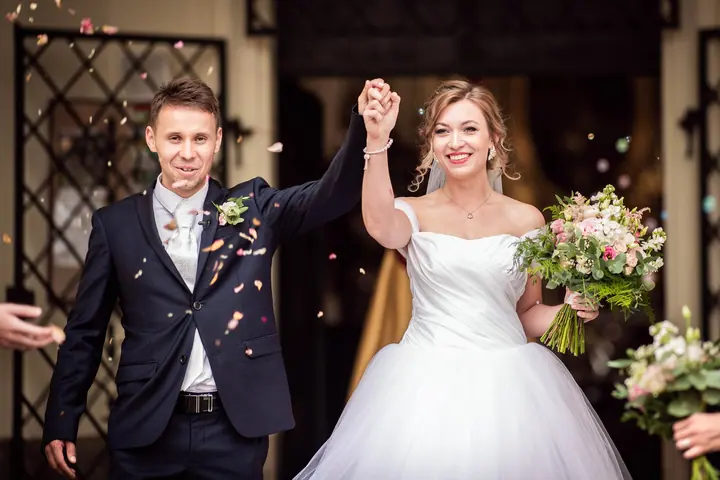
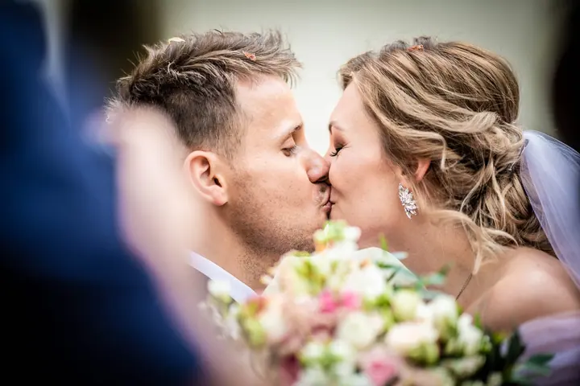
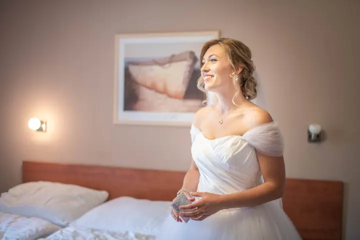

Svatby
Na svatbu můžu přijet sám, nebo spolu s manželkou Marcelou. Vybrat si můžete krátkou svatbu od příprav po novomanželské focení, celodenní svatbu až po první tanec, nebo dlouhou svatbu od rána do noci.





Jmenuji se Jiří Matějka a jsem svatební fotograf z Vysočiny. Rád hledám zajímavé úhly a baví mě hra se světlem. Na svatby po celé republice jezdím sám, nebo s manželkou Marcelou.
Více o mně
„Rád hledám zajímavé úhly a baví mě hra se světlem.“
— Jiří Matějka
Na svatbu můžu přijet sám, nebo spolu s manželkou Marcelou. Vybrat si můžete krátkou svatbu od příprav po novomanželské focení, celodenní svatbu až po první tanec, nebo dlouhou svatbu od rána do noci.
Fotím portréty, business fotky a osobní portfolio, také ve vlastním ateliéru v Jihlavě. Cenu domluvíme podle toho, co potřebujete.
Rodinné a těhotenské focení s dětmi má na starosti hlavně Marcela, sama maminka. Mnohé páry potkáváme znovu po letech, když na svatbu navážeme rodinným focením.
Fotíme konference, plesy, večírky, festivaly a večerní akce. Na tyhle zakázky jezdíme oba.
Jsem svatební fotograf z Jihlavy a fotím po celé České republice. Nejraději fotím svatby a portréty. Rád hledám zajímavé úhly a baví mě hra se světlem, proto se pořád vzdělávám a zkoumám nové trendy a techniky.
S manželkou Marcelou nás kromě jiného spojila právě fotografie. Já už jsem měl tehdy za sebou mnoho let v oboru, Marcela se přidala v roce 2019. Práci si rádi dělíme, doplňujeme se a máme stejný styl. Na Váš svatební den můžeme přijet i oba, takže máte pokryté víc míst a víc okamžiků najednou.
Být Vám po boku ve Váš důležitý den je pro nás čest i zodpovědnost. Fotíme proto na dvě bezzrcadlovky Nikon Z8 a světelné objektivy ze stejné série. V Jihlavě mám vlastní ateliér, kde fotím produkty, portréty a business fotky. Nejvíc nás ale těší, když se s Vámi po letech potkáme znovu, třeba na rodinném focení.
Napište mi přes formulář nebo zavolejte. Domluvíme se, jestli je termín volný a jak si Váš den představujete.
Vyberete si krátkou svatbu na 4–5 hodin, celodenní na 8–10 hodin nebo dlouhou na 12 hodin. Probereme také, jestli přijedu sám, nebo s Marcelou.
Jsme s Vámi od příprav přes obřad až po novomanželské focení, podle balíčku i do prvního tance nebo do noci.
Fotky pečlivě vybereme a upravíme a pak Vám je předáme v dohodnutém termínu.
Krátká svatba na 4–5 hodin stojí 12 000 Kč, celodenní na 8–10 hodin 16 000 Kč a dlouhá svatba na 12 hodin 20 000 Kč.
Ano. Jsme z Jihlavy, ale za svatebními páry jezdíme po celé České republice.
Můžeme. Na svatbu přijedu sám, nebo spolu s manželkou Marcelou. Ve dvou toho stihneme zachytit víc, například přípravy nevěsty i ženicha zároveň.
Ano, rodinné, těhotenské a párové focení stojí 3 000 Kč za hodinu. Rodinám s dětmi se věnuje hlavně Marcela.
Ano, mám vlastní ateliér v Jihlavě. Portréty, business fotky a osobní portfolio fotím za cenu po domluvě.